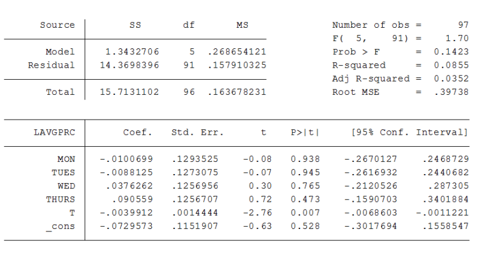

Time Series
Nova SBE
Exercises
https://moodle.novasbe.pt/mod/folder/view.php?id=4021

Exercise 9.1
Let \(cGDP_t\) denote the annual percentage change in gross domestic product and let \(int_t\) denote a short-term interest rate. Suppose that \(cGDP_t\) is related to interest rate by
\[cGDP_t=\alpha_0+\delta_0 int_t + \delta_1 int_{t-1}+u_t\]
where \(u_t\) is uncorreltaed with \(int_t\), \(int_{t-1}\), and all other past values of interest rates. Suppose that the Federal Reserve follows the policy rule
\[int_t=\gamma_0 + \gamma_1 (cGDP_{t-1}-3)+v_t\]
where \(\gamma_1>0\). If \(v_t\) is uncorrelated with all past values of \(int_t\) and \(u_t\), argue that \(int_t\) must be correlated with \(u_{t-1}\). Which Gauss-Markov assumption does this violate?
Exercise 9.3
Using daily price and quantity observations on fish prices at Big Fish market in Lisbon we obtained the estimation results given below, where \(LAVGPRC\) is the logarithm of the average price of fish, \(MON\), \(TUES\), \(WED\), and \(THURS\) are daily dummy variables, and \(T\) is a linear time trend.
Exercise 9.3
Exercise 9.3
- Interpret the coefficient estimate on the linear time trend.
- Is there evidence that prices vary systematically within a week? How would you formally test for this hypothesis?
Exercise 9.3
Now consider the table below here we include two new variables \(WAVE2\) and \(WAVE3\), which are measures of wave heights over the past few days.
Exercise 9.3
Are these variables individually significant? Describe an economic mechanism by which story seas woudl increase the price of fish.
What happened to the time trend when the two new variables were included in the regression? What must be going on?
Why do you expect all thej explanatory variables to be strictly exogenous? Explain briefly the difference between conteporaneus exogeneity and strict exogeneity.
Exercise 10.2
Let \(e_t\) be a sequence of independent identically distributed rvs with mean 0 and variance 1. Define a stochastic process by:
\[ x_t=e_T-0.5 e_{t-1}+0.5 e_{t-2}\]
for \(t=1,2,...\)
- Find \(E[x_t]\) and \(V[x_t]\). Do either of these depend on \(t\)?
- Show that \(Corr(x_t,x_{t+1})=-0.5\) and \(Corr(x_t,x_{t+2})=1/3\)
Exercise 10.2
- What is \(Corr(x_t,x_{t+h})\) for \(h>2\)>
- Is \(x_t\) an asymptotically uncorrelated process?

Econometrics